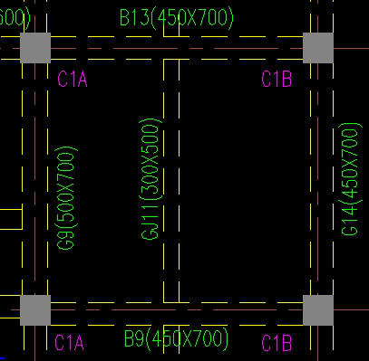
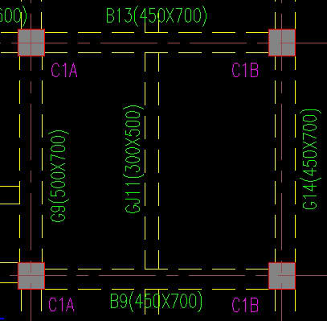
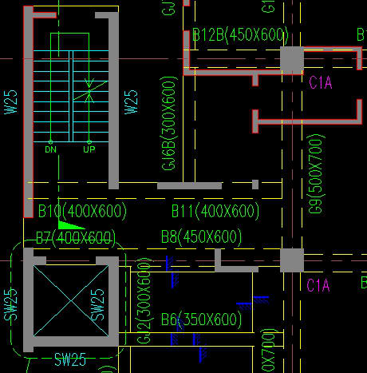
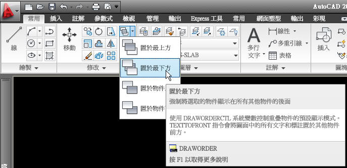
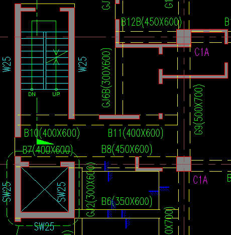

一般使用AutoCAD作圖時須了解圖面物件繪圖順序，如果你的圖面物件是屬於 線段、文字方面，這部分屬於單線狀態所以沒有繪圖順序的覆蓋問題，當您的物件為 填滿區域 就必須了解運用 繪圖順序。
以下圖片中的 混凝土柱 填滿剖面線，遮蔽了其他線段物件:

以下圖片中的 混凝土柱 填滿剖面線，依照需求是需要置於最下方:

所以為了避免遮到其他物件，在建立剖面線(HATCH)時，會依照預設為 置於邊界後方。將填充線或填滿置於填充線邊界後方。
繪圖順序:
指定剖面線或填滿的繪圖順序。您可以將剖面線或填滿置於所有其他物件的後面、前面、填充線邊界的後面或前面。(HPDRAWORDER 系統變數)
若圖面中的 混凝土柱及混凝土牆 剖面線物件已經跑掉，也就是沒有正常的置於最下方。

這時候可以透過 繪圖順序 DRAWORDER指令 來變更物件的順序:

說明:
▲置於物件上方:
將選取的物件移到指定的參考物件上方。
▲置於物件下方
將選取的物件移到指定的參考物件下方。
▲置於最上方
將選取的物件移到圖面中物件序列的頂端。
▲置於最下方
將選取的物件移到圖面中物件序列的底端。
這時候您若有分圖層建立物件，即可輕鬆使用圖層開關來快速變更 繪圖順序。

影片展示(建議使用高畫質HQ播放，畫面解析度較佳)：
在這裡也分享一個進階作法，透過巨集語法+LISP語法方式，這不算是一個程式喔，
所以可以把我提供的語法使用 新增工具按鈕或是新增工具選項板按鈕 即可快速完成!
巨集語法+LISP語法:
^C^CDRAWORDER;(SSGET "X" '((0 . "HATCH")));;B;REGEN;
說明:過濾選擇剖面線，再將其置於最下方
影片展示(建議使用高畫質HQ播放，畫面解析度較佳)：
以前我在事務所上班時，常常使用剖面線來上色，這時候圖面的繪圖順序就比較複雜，
當時我們都是透過 LISP+DCL 來快速處理，這部份的需求比較偏項建築領域，
所以只能自行開發程式來滿足工作需求有效提昇工作效率!
影片展示(建議使用高畫質HQ播放，畫面解析度較佳)：